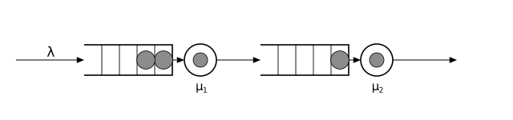
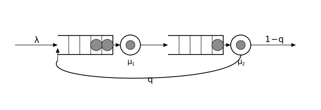

Networks: stations wired together
Real systems are rarely one station. A request hits a load balancer, then an application server, then a database, sometimes loops back for a retry. In Concourse a network is just more stations and more route! calls, and each route! takes a routing kernel that decides where a finished job goes:
Always(dest)— every job goes todest.Probabilistic(a => 0.3, b => 0.7)— an independent coin flip per job.RoundRobin([a, b])— alternate destinations in strict rotation.ByMark(...)— route by a value stamped on the job (the marks page).
This page builds three little networks — a tandem line, a feedback loop, and a split — and checks each against exact theory.
Tandem: queues in series
Two stations in a row; every job passes through both.

A classical result (Burke's theorem) says the departure stream of a stable M/M/1 queue is itself a Poisson process with rate $\lambda$. So station 2 is also an M/M/1 queue, and the mean number in the whole system is just a sum of two single-queue formulas:
\[L = \frac{\rho_1}{1-\rho_1} + \frac{\rho_2}{1-\rho_2}, \qquad \rho_i = \lambda/\mu_i .\]
With $\lambda = 1$, $\mu_1 = 2$, $\mu_2 = 1.6$: $L = 1 + 5/3 \approx 2.667$.
using Concourse, Statistics
function replicate(f, m, θ, horizon, nreps; seed0 = 1000)
vals = [f(simulate(m, θ, horizon; seed = seed0 + r)) for r in 1:nreps]
mean(vals), std(vals) / sqrt(nreps)
end
net = QueueNetwork(param_names = (:lambda, :mu1, :mu2))
source!(net, :arrive; interarrival = Law(:Exponential, scale = inv(Param(:lambda))))
station!(net, :first; service = Law(:Exponential, scale = inv(Param(:mu1))))
station!(net, :second; service = Law(:Exponential, scale = inv(Param(:mu2))))
sink!(net, :done)
route!(net, :arrive, Always(:first))
route!(net, :first, Always(:second))
route!(net, :second, Always(:done))
tandem = compile(net)
est, se = replicate(r -> time_average(number_in_system, tandem, r),
tandem, [1.0, 2.0, 1.6], 2000.0, 16)
println("measured L: ", round(est, digits = 3), " ± ", round(se, digits = 3),
" theory: ", round(1.0 + 5 / 3, digits = 3))measured L: 2.655 ± 0.064 theory: 2.667Feedback: jobs that come back
Now let a finished job need rework: after station 2, with probability $q = 0.25$ it is sent back to station 1, otherwise it leaves.

The routing now has a cycle, so how much traffic does each station really see? Balance the flow: station 1 receives the fresh stream $\lambda$ plus the fed-back fraction $q$ of everything that completes, and in the long run what completes is what enters. Solving the traffic equations gives the effective arrival rate
\[\lambda_{\text{eff}} = \frac{\lambda}{1-q},\]
at both stations — each job makes a geometric number of passes, $1/(1-q)$ on average. Jackson's theorem says each station then behaves as M/M/1 at rate $\lambda_{\text{eff}}$ (remarkably, even though the merged stream-plus-feedback is not Poisson). With $\lambda = 1$, $q = 1/4$: $\lambda_{\text{eff}} = 4/3$, and with $\mu_1 = 2, \mu_2 = 4$ the loads are $2/3$ and $1/3$:
\[L = \frac{2/3}{1/3} + \frac{1/3}{2/3} = 2.5 .\]
net = QueueNetwork(param_names = (:lambda, :mu1, :mu2))
source!(net, :arrive; interarrival = Law(:Exponential, scale = inv(Param(:lambda))))
station!(net, :first; service = Law(:Exponential, scale = inv(Param(:mu1))))
station!(net, :second; service = Law(:Exponential, scale = inv(Param(:mu2))))
sink!(net, :done)
route!(net, :arrive, Always(:first))
route!(net, :first, Always(:second))
route!(net, :second, Probabilistic(:first => 0.25, :done => 0.75))
loop = compile(net)
est, se = replicate(r -> time_average(number_in_system, loop, r),
loop, [1.0, 2.0, 4.0], 2000.0, 16)
println("measured L: ", round(est, digits = 3), " ± ", round(se, digits = 3),
" theory: 2.5")measured L: 2.404 ± 0.072 theory: 2.5Each probabilistic routing decision is one recorded coin flip in the record's draw list, which is why a run through this network still replays exactly.
Splitting a stream: coin flips versus turn-taking
Send a rate-2 Poisson stream to two identical servers, first with Probabilistic (each job flips a fair coin), then with RoundRobin (strict alternation). The rates are identical — each server gets rate 1 — so are the queues the same?
Theory says no, and the difference is instructive. A random split of a Poisson process thins it: each branch is again Poisson, so each server is an honest M/M/1 with $\rho = 0.5$ and $L = 1$. But alternation is not thinning. Each server sees every second arrival, and the gap between its arrivals is a sum of two exponentials — more regular than Poisson. Smoother arrivals mean less queueing. The exact value comes from GI/M/1 theory (GI = general independent interarrivals): the mean number in system is $\rho/(1-\sigma)$, where $\sigma$ solves a fixed-point equation in the interarrival distribution's Laplace transform. Three lines compute it:
σ = 0.5
for _ in 1:100
global σ = (1 / (2 - σ))^2 # Erlang-2 interarrivals, μ = 2
end
L_rr = 0.5 / (1 - σ)
println("sigma = ", round(σ, digits = 4), ", GI/M/1 prediction L = ",
round(L_rr, digits = 4))sigma = 0.382, GI/M/1 prediction L = 0.809function split_model(kernel)
net = QueueNetwork(param_names = (:lambda, :mu))
source!(net, :arrive; interarrival = Law(:Exponential, scale = inv(Param(:lambda))))
station!(net, :a; service = Law(:Exponential, scale = inv(Param(:mu))))
station!(net, :b; service = Law(:Exponential, scale = inv(Param(:mu))))
sink!(net, :done)
route!(net, :arrive, kernel)
route!(net, :a, Always(:done))
route!(net, :b, Always(:done))
compile(net)
end
coin = split_model(Probabilistic(:a => 0.5, :b => 0.5))
turn = split_model(RoundRobin([:a, :b]))
at_a(m) = (q = m.names[:a]; st -> Float64(length(st.buf[q]) + length(st.srv[q])))
est_c, se_c = replicate(r -> time_average(at_a(coin), coin, r), coin, [2.0, 2.0], 2000.0, 16)
est_t, se_t = replicate(r -> time_average(at_a(turn), turn, r), turn, [2.0, 2.0], 2000.0, 16)
println("coin flips: L at server a = ", round(est_c, digits = 3), " ± ",
round(se_c, digits = 3), " theory: 1.0")
println("round robin: L at server a = ", round(est_t, digits = 3), " ± ",
round(se_t, digits = 3), " theory: ", round(L_rr, digits = 3))coin flips: L at server a = 0.987 ± 0.02 theory: 1.0
round robin: L at server a = 0.802 ± 0.013 theory: 0.809Same arrival rate, same server, one-fifth less queue — purely from smoothing the arrival stream. (For the curious: $\sigma$ here is exactly $(3-\sqrt 5)/2$, so the golden ratio is hiding in the round-robin queue.)
Joining the shortest queue
Round robin smooths the arrival stream blindly. A real load balancer can do better by looking: send each job to whichever server currently holds the fewest. That is ShortestQueue, the one routing kernel that reads station state:
jsq = split_model(ShortestQueue(:a, :b))
est_j, se_j = replicate(r -> time_average(at_a(jsq), jsq, r), jsq, [2.0, 2.0], 2000.0, 16)
println("shortest queue: L at server a = ", round(est_j, digits = 3), " ± ",
round(se_j, digits = 3))shortest queue: L at server a = 0.871 ± 0.008Better than both the coin flips and the turn-taking — the join-the-shortest- queue (JSQ) system behaves nearly like a single pooled queue, because a server never idles while the other holds a waiting job. (There is no one-line formula this time; the exact value comes from solving the two-dimensional Markov chain numerically, which is how the test suite validates this kernel.)
ShortestQueue is deterministic: the smallest occupancy wins, and a tie goes to the destination with the lowest station index (declaration order). Occupancy means the total number of jobs at the destination — waiting, in service, and held blocked. For round stations (token-serving stations declared with a Rounds config) there is a second notion, ShortestQueue(dests...; by = :tokens), which compares total remaining work — the active jobs' token counters plus the waiting jobs' full profiles; it requires every destination to be a round station, since only round stations keep work counters.
Why is a state-reading route allowed when a state-reading ByMark expression is rejected? Because nothing random happens: Concourse's design rule (amendment A4) is that every likelihood-bearing decision must flow through a recorded draw, and a deterministic function of the state bears no likelihood. A ShortestQueue decision draws nothing and records nothing — replay reproduces it by recomputing the occupancies from the folded state.
Two caveats, both consequences of reading state:
- Gradients. Score gradients over records remain valid — the decision contributes no likelihood factor — but pathwise IPA is not certified: a parameter perturbation that reorders two events can flip a routing decision discontinuously.
branch_worldtherefore refuses models containingShortestQueuein v1; use the score estimator over records. - Stability reports.
Concourse.stability's traffic equations treatShortestQueueas an equal split across its destinations. That is exact under symmetry (identical destinations share the flow equally) and an approximation otherwise, since JSQ shifts flow toward faster-draining stations.
Open versus closed networks
Every network on this page is open: jobs enter from outside, circulate, and leave. The other classical family is closed: a fixed population of $N$ jobs circulates forever, never entering or leaving — the standard model for "$N$ users at terminals, each thinking, then submitting a job" — and its theory (mean value analysis) prices interactive systems.
populate! declares exactly that: seed $N$ jobs inside the network at time zero, and the network needs no source! at all. Four users at terminals — a station with four servers, so everyone thinks in parallel — submit jobs to one CPU and wait for the answer:
net = QueueNetwork(param_names = (:think, :serve))
station!(net, :terminals; servers = 4,
service = Law(:Exponential, scale = inv(Param(:think))))
station!(net, :cpu; service = Law(:Exponential, scale = inv(Param(:serve))))
route!(net, :terminals, Always(:cpu))
route!(net, :cpu, Always(:terminals))
populate!(net, :terminals, 4)
interactive = compile(net)
rec = simulate(interactive, [0.5, 3.0], 2000.0; seed = 9)
cpu = interactive.names[:cpu]
time_average(st -> Float64(length(st.buf[cpu]) + length(st.srv[cpu])),
interactive, rec)0.8080267047010994No job ever enters or leaves — the four circulate forever between thinking and computing. The closed networks manual page develops the machinery: multiclass populations with drawn initial marks, the record's "firing 0" slot that keeps replay exact, and validation of simulated occupancies against the exact product-form answer via Buzen's algorithm.
Routing kernels so far treat all jobs alike. The next page gives jobs identity — classes, sizes, service demands they carry with them.